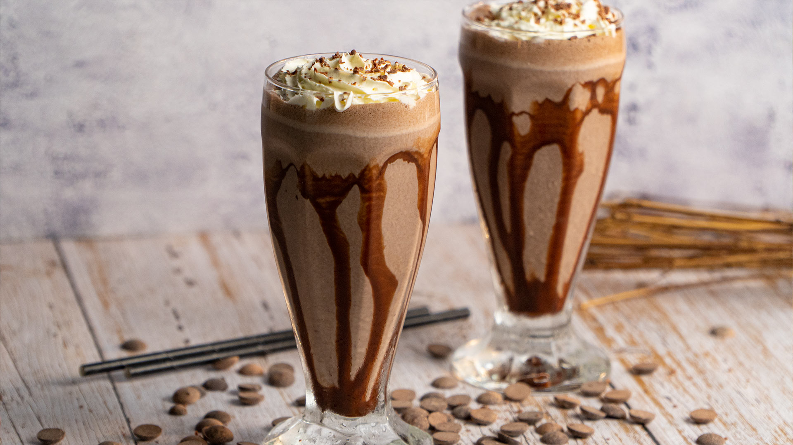

Chocolate Milkshake Dessert

Chocolate Milkshake with Ice Cream is Yummy. Here's how you make the dessert.
Ingredients
- 500ml of milk (Semi skimmed preferable)
- 4 large scoops of chocolate ice cream
- 10 marshmallows
- 60 ml of double whipped cream
- 1/4 cup of chocolate syrup
- Sweet popcorn
- 2 cookies
- 2 waffles
- Optional: 2 table spoons of hazelnuts
Recipe
- Start by getting a small tablespoon and spreading chocolate along the inside of the glass
- Allow the ice-cream to become softer at room temp.
- For optimal results place the glass into the freezer to let it cool.
- Place the 500ml of milk into a blender along with the chocolate ice cream scoops
- Let the blender do its magic and once smooth pour the mix into the mason jar glasses
- Add the marshmallows, whipped cream, sweet popcorn, waffles and cookies.
- Decorate the treat with a warm drizzle of chocolate spread.Optionally add hazlenuts at this point
- Serve right away with a straw
.